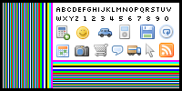

This page demos Retina.js page zoom detection.
If everything is working correctly the test image should always appear 200x100 in screen pixels
without any anti-alias scaling. Zoom in/out on page to test the code.
Image size is recalculated after every second.

0%